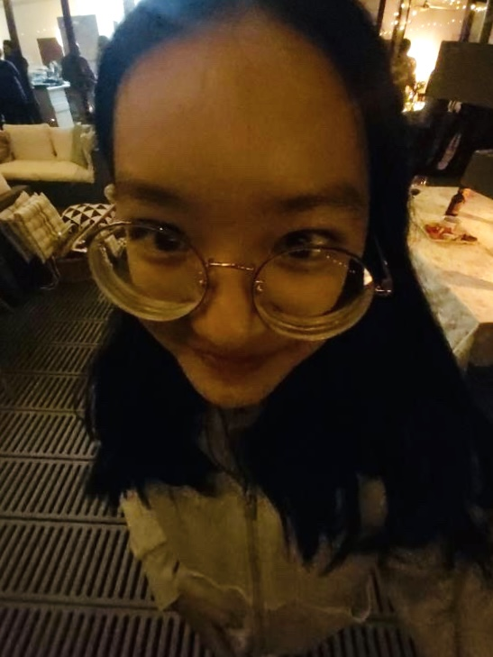

個人簡介
我是徐悅容，目前就讀於亞洲大學聽語系。我是一位跨領域的學習者，致力於將聽覺醫學專業知識與數位藝術創作相結合。我也在數位插畫領域持續精進，擅長二次元人物創作與社群接案經營。
學歷經歷
亞洲大學 - 聽力暨語言治療學系 (在學中)
• 參與台南柳營奇美醫院專業參訪
• 負責教育性質社團破冰遊戲策劃

我是徐悅容，目前就讀於亞洲大學聽語系。我是一位跨領域的學習者，致力於將聽覺醫學專業知識與數位藝術創作相結合。我也在數位插畫領域持續精進，擅長二次元人物創作與社群接案經營。
亞洲大學 - 聽力暨語言治療學系 (在學中)
• 參與台南柳營奇美醫院專業參訪
• 負責教育性質社團破冰遊戲策劃